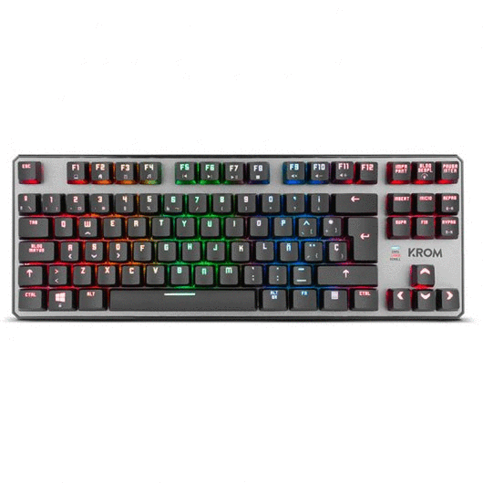
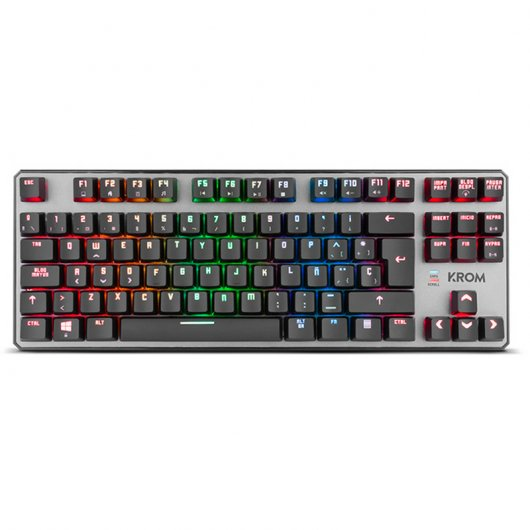
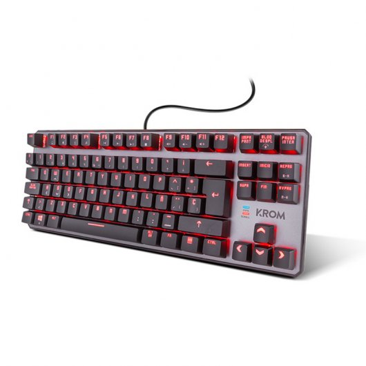
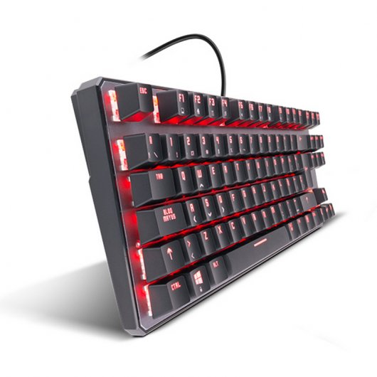
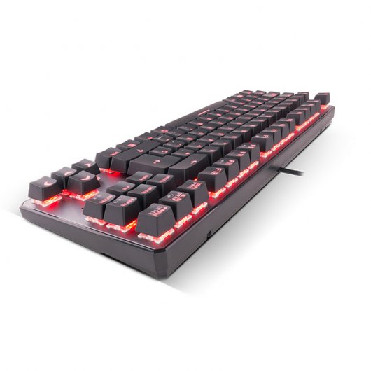

FUTURETECH STORE |
|      |
Krom Kernel TLK
49,99€
Krom Kernel TKL es el teclado perfecto para los que queréis ganar no sólo en rapidez de ejecución, sino también en espacio para vuestro escritorio.
Al ser un teclado mecánico, totalmente configurable sin software y que prescinde de la parte numérica adicional, Kernel TKL ofrece una mayor velocidad de pulsación, permitiéndonos realizar muchas más acciones en menor tiempo y adaptar su rendimiento y apariencia de manera sencilla, mediante simples atajos de teclado.
Diseño e iluminación
Kernel TKL no posee teclado numérico ni reposamuñecas: al ser más pequeño que otros teclados, el espacio en tu escritorio aumentará tanto como tu comodidad jugando y trabajando. Sus dos pestañas elevadoras en la parte posterior te permitirán adaptarlo a la altura que más te convenga en cada momento.
Kernel TKL cuenta con iluminación RGB en cada switch y 9 efectos de iluminación totalmente personalizables: podrás cambiar la velocidad e intensidad de cada efecto y reconocer cada tecla de un vistazo gracias a la intensidad de su iluminación LED.
Opciones cromáticas
Kernel TKL te permite crear tus propios colores usando sencillos atajos de teclado. Pulsa 5 segundos las teclas FN + Imprimir Pantalla: se iluminarán automáticamente las teclas Suprimir (color Rojo), Fin (color Verde) y Avance Página (color Azul). Con ellas y con las teclas Insert, Inicio y Re Página podrás moverte por el espectro cromático, elegir el tono que más te guste y guardarlo usando de nuevo la combinación FN + Imprimir Pantalla.
Si en cualquier momento quieres devolver tu Kernel TKL a su configuración original, simplemente pulsa FN + ESC y, a continuación, F1, F3 y F5 consecutivamente.
Prestaciones
Con una pulsación suave y efectiva gracias a sus switches mecánicos, Kernel TKL te ofrece la posibilidad de asignar combinaciones macros a cualquier tecla. Además, gracias a su Modo Gaming (que desactiva la tecla Windows), su sistema anti ghosting y sus 11 teclas multimedia, con Kernel TKL disfrutarás de sesiones de juego fluidas y sin interrupciones. Su cable es trenzado, por lo que su durabilidad y resistencia al paso del tiempo está asegurada.
Switches mecánicos
Kernel TKL es un teclado mecánico y, por tanto, basado en una tecnología individual que ofrece una experiencia de pulsación totalmente unitaria, incrementando así el rendimiento de tu experiencia gaming o de escritura en comparación con otros teclados.
Configuración
Como no necesita de software adicional para su configuración, los atajos de teclado serán tu mejor aliado con Kernel TKL, ya que todas sus posibilidades en iluminación y creación de macros se configuran mediante simples combinaciones de teclas.
Características
Teclado con switches mecánicos (Outemu red)
Tenkeyless (sin teclado numérico)
Iluminación LED RGB 16.8 millones de colores
Bloqueo de la tecla Windows
Creación de macros on-the-fly
Función anti-ghosting
11 Teclas multimedia
9 efectos de iluminación diferentes
Efectos de luces configurables sin software
Especificaciones
Requisitos del sistema
Sistema operativo Windows soportado: Windows 10,Windows 10 Education,Windows 10 Education x64,Windows 10 Enterprise,Windows 10 Enterprise x64,Windows 10 Home,Windows 10 Home x64,Windows 10 IOT Core,Windows 10 Pro,Windows 10 Pro x64,Windows 7,Windows 7 Enterprise,Windows 7 Enterprise x64,Windows 7 Home Basic,Windows 7 Home Basic x64,Windows 7 Home Premium,Windows 7 Home Premium x64,Windows 7 Professional,Windows 7 Professional x64,Windows 7 Starter,Windows 7 Starter x64,Windows 7 Ultimate,Windows 7 Ultimate x64,Windows 8,Windows 8 Enterprise,Windows 8 Enterprise x64,Windows 8 Pro,Windows 8 Pro x64,Windows 8 x64,Windows 8.1,Windows 8.1 Enterprise,Windows 8.1 Enterprise x64,Windows 8.1 Pro,Windows 8.1 Pro x64,Windows 8.1 x64
Peso y dimensiones
Dimensiones de teclado (Ancho x Profundidad x Altura): 361 x 22,5 x 133,5 mm
Peso del teclado: 950 g
Control de energía
Alimentación: USB
Consumo de energía: 260 mA
Voltaje de operación: 5 V
Teclado
Interfaz del dispositivo: USB
Uso recomendado: Juego
Interruptor del teclado: Interruptor mecánico
Tecnología de conectividad: Alámbrico
Utilizar con: Videoconsola
Formato del teclado: Estándar
Estilo de teclado: Derecho
Dispositivo apuntador: No
Concentrador USB: No
Lector de huella digital: No
Descansa muñecas: No
Teclado numérico: No
Teclado, cantidad de teclas: 87
Teclas multimedia: Si
Vida útil de teclas: 50 millón de caracteres
Fuerza de acción: 60 g
Frecuencia de sondeo: 1000 Hz
Memoria incorporada: Si
Capacidad de memoria integrada: 64 KB
Ergonomía
Longitud de cable: 1,8 m
Diseño
Color del producto: Negro
Retroiluminación: Si
Efectos luminosos: Si
Número de modos de luz: 9
Tipo de retroiluminación: LED RGB
Número de colores: 16,8 M
Contactos del conector chapado: Oro
Antifantasma: Si
|


{kind=link}
{kind=link}
{kind=link}
{kind=link}